Вітальня · журнал «ДентАрт» 2018 №3
Професор Петро Леус: «Комунальні програми мають передбачати первинну профілактику карієсу і раннє лікування»
Інтерв'ю з професором Петром Леусом,кафедра терапевтичної стоматології Мінського державного медичного університету (м. Мінськ, Республіка Білорусь). Розмовляла Ганна Антипович
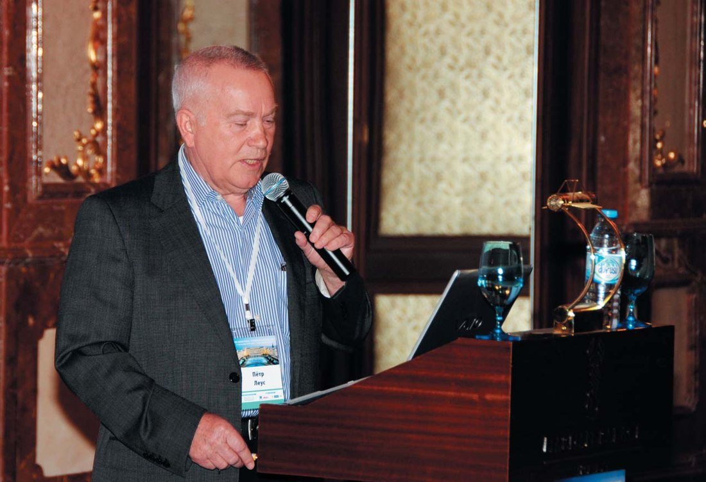
У травні 2018 року Петро Андрійович Леус, професор кафедри терапевтичної стоматології Мінського державного медичного університету, приймав вітання з 80-річчям від колег не тільки з Білорусі, але з багатьох країн, де його знають як найавторитетнішого фахівця в галузі досліджень етіології, патогенезу і факторів ризику карієсу, первинної та вторинної його профілактики на комунальному рівні. Професор Леус народився в Україні, його багаторічна співпраця з українськими колегами принесла вагомі плоди в наукових дослідженнях та організації стоматологічної допомоги населенню.
Як же було не запросити у «Вітальню» «ДентАрта» шановного ювіляра! І Петро Андрійович оперативно відповів на наші запитання – і серйозно, і з іскорками гумору, почуття якого зберегти в наш непростий час вдається не всім...
«Я створював програму профілактики стоматологічних захворювань для країн, що розвиваються, на основі європейського досвіду та рекомендацій ВООЗ»
– Шановний Петре Андрійовичу, в рік свого ювілею Ви зробили великий подарунок стоматологічній спільноті – видали книгу «Діагностика, лікування та профілактика карієсу зубів. Вибрані авторські методи і програми». У чому основний меседж цієї книги?
– Якщо комусь цікава тема, треба прочитати книгу. У ній є і те, про що Ви запитуєте. Але, з точки зору нинішнього потоку інформації, краще знати заздалегідь, чи варто витрачати час на читання будь-якої чергової книги. Я в захваті, наприклад, від чергового подарунка професора Анатолія Карловича Ніколішина – його книги про профілактику флюорозу зубів. По-перше, він трудяга, стільки книг написав, по-друге, якість видання вже далеко не радянська (як його перші книги). Мені цікаво, як запобігти флюорозу? Так, дуже! Гортаю... Шукаю інформацію по моїй рідній Карлівці. Нічого втішного. З поцілунком ставлю книгу на полицю.
У мене є книга «Профілактична комунальна стоматологія» (М., 2008). Академік Валерій Костянтинович Леонтьєв, дуже авторитетний учений, у своїй рецензії на мою книгу написав: «повинен прочитати кожен стоматолог, з початку до кінця». 444 сторінки! Не дуже багато стоматологів прислухалися, поскільки в РФ, Україні та інших країнах у навчальній програмі немає предмета «Комунальна стоматологія», і лікар не цікавиться профілактикою на комунальному рівні, а відразу прагне імплантувати зуби. Однак якісь «розумники» розмістили книгу в Інтернеті, і багато охочих переписують частини тексту для своїх дисертацій та підручників. Бачу в цьому хоч якусь користь від книги.
Набагато гірше було і є з моїми десятками методів діагностики (наприклад, вітальне фарбування, індекси КПІ, КПК, РІК, СРЗ та ін.), лікування (наприклад, ремінералізуюча терапія), програмами профілактики і т.д. Я ніколи не прагнув робити з цих методів винаходи. Віддавав дисертантам і практичній стоматології, і зараз мене не бентежить, що хтось привласнює ці методи, описує в підручниках без посилання і т.п. Аби на користь! Однак для допитливих дослідників важливо знайти першоджерело. Ця книга – на допомогу допитливим. І ще. Ясна річ, хтось буде вдосконалювати корисні методи. Для цього потрібні оригінали, а не сотні «модифікацій», створених любителями «легкої» науки. Загалом, навіть для таких товаришів корисно прочитати мою книгу. А взагалі-то ця книга – довідник для професіоналів, які цікавляться питаннями, означеними в заголовку.
– Двадцять років тому Ви розробили і почали впроваджувати в Білорусі програму профілактики стоматологічних захворювань. Які результати отримані, як будете рухатися далі на цьому напрямку і що з досвіду Білорусі треба було б запозичити іншим країнам, зокрема Україні?
– Україні, зрозуміло, допоможе ЄС шляхом впровадження вже готових, дуже ефективних програм профілактики основних стоматологічних захворювань. Парламент легко вирішить питання, хто буде платити. Схеми різні, але близько 100 євро на одну дитину на рік запотребиться. Подробиці вибору – в Інтернеті. Навряд чи буде корисним Україні досвід Білорусі, тому що, по-перше, тут ще не досягнуті європейські стандарти стоматологічного здоров'я дітей, і по-друге, в основному збережена державна система шкільної стоматології, і програма профілактики – державний документ.
Закриваємо поставлене запитання, але повернімося до історії, як мені здається, цікавої. Програма профілактики в Білорусі створювалася не 20 років тому, а 1984 року в Одесі на базі НДІ стоматології на ВООЗівський нараді головних лікарів-стоматологів союзних республік, яку я проводив, будучи співробітником ВООЗ, з метою навчання учасників, як потрібно створювати програми профілактики. Представник Білорусі, відомий професор Е.М. Мельниченко прийняв нараду за корисний захід, і рівно через 2 роки, у 1986 році, Наказом МОЗ Білоруської РСР була запроваджена державна програма профілактики стоматологічних захворювань. Реалізацію результатів згаданої наради в Україні Ви знаєте краще від мене...
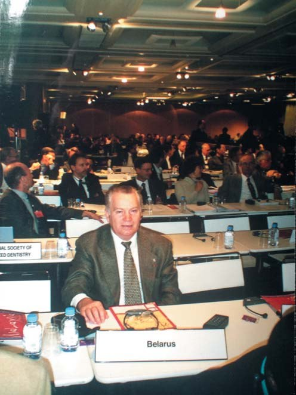
На конгресі FDI у Відні, Австрія. 1995 р.
У Росії 1986 року я організував кафедру профілактики стоматологічних захворювань ММСІ, і через 2 роки – наказ МОЗ та Комітету з освіти «Про профілактику стоматологічних захворювань». Ця пожовкла брошура ще збереглася на запорошених полицях у багатьох навчальних закладах пострадянських країн, і що дуже важливо, один до одного нові програми профілактики переписують зміст документа 30-річної давності. Більше того, якщо ви порівняєте зміст Програми профілактики 1988 року в СРСР із сучасними програмами ЄС, вони відрізняються тільки бюджетом. Фішка в тому, що я створював програму для країн, що розвиваються, на основі вже наявного в Європі досвіду і рекомендацій ВООЗ.
Оновлена Програма профілактики у Білорусі 1998 року (на яку Ви посилаєтеся) – фактично копія програм 1986 року, але з новими завданнями. До 2010 року вони були виконані, але, як уже зазначалося, від Заходу ми відстаємо, особливо за критеріями стоматологічного здоров'я дітей дошкільного віку.
Що робити? Не знаю! Гальмують чиновники, які не вважають, що зменшення карієсу у дітей збільшить їхнє благополуччя. В Україні – те ж саме, але ще й немає державної програми профілактики, а чиновники не вважають платну стоматологію для дітей анахронізмом у цивілізованому світі.
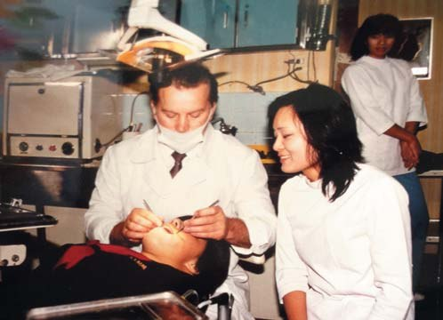
Майстер-клас з ергономіки у стоматології. Японія, 1983 р.
«Суть вторинної профілактики – своєчасне і нормальне лікування»
– Останнім часом, як видно з Ваших публікацій, Ви особливу увагу звертаєте на вторинну профілактику карієсу. Які завдання тут слід вирішувати і організаторам охорони здоров'я, і стоматологічній спільноті?
– Дуже складно! Зверніть увагу на очевидний факт гіршого стану зубів дорослого населення в країнах ЄС у порівнянні з Україною та іншими країнами Східної Європи. У Західній Європі, куди ви логічно прагнете, беззубих багатих імплантують, а хто «без штанів», задовольняється безплатними знімними пластмасовими протезами, які не дозволяють багато бурчати. Ви знаєте, був такий дуже симпатичний москаль, зубний лікар, професор, академік Олександр Євдокимов, який після революції у 1917 р. давав поради Дауге і Леніну приблизно такого змісту: «радянський пролетаріат не потребує зубних протезів (у той час, за безвізовим режимом, зубні лікарі втекли на Захід через закриття приватних кабінетів) і цілком може пережовувати їжу щелепами». Відсоток беззубих у більшості країн ЄС приблизно удвічі більший, ніж в Україні (з поправкою на старіший вік). Чому? При пульпітах та апікальних періодонтитах зуби видаляють, щоб 1) усунути хронічну інфекцію і 2) держава не платить, а багато пацієнтів платити не можуть (ви знаєте реальну вартість якісної ендодонтії). Що роблять сучасні ескулапи в СНД: миш'як або аналоги, часткове пломбування каналів, якщо лікар знає, скільки їх у конкретному зубі, «до побачення» без рентгена, повторна «ендодонтія», видалення, якщо пацієнт ще не забрав «подарунок» зубника в інший світ.
Суть вторинної профілактики – своєчасне і нормальне лікування, згідно із заповіддю лікаря. Як такої програми ще ніде немає, але основні елементи вторинної і третинної профілактики проглядаються в державних програмах (або програмах асоціацій) зі стоматології у Німеччині, Великій Британії, скандинавських країнах. Ідеальна система – диспансеризація, проголошена в СРСР. Але вона була орієнтована на хворих і не спрацювала належним чином. Та й вартість системи ніхто не рахував. У статтях, які я публікую на цю тему, викладено науково обґрунтовані підходи до цієї проблеми у наших безгрошових умовах. Якщо коротко: 1) ліцензування лікаря на професійну компетентність; 2) мотивація пацієнтів до щорічних оглядів; 3) протокол лікування згідно з доказовою стоматологією, яка виключає халтуру; 4) повна оплата лікування (пряма, страхова, державна); 5) відповідальність лікаря за ускладнення у найближчі і віддалені терміни.
«Вивчення світового досвіду стало фундаментом моєї впертості...»
– У 1980-1985 роках Ви були співробітником стоматологічного відділу штаб-квартири Всесвітньої організації охорони здоров'я в Женеві. Що означав цей досвід для Вас?
– Докладне вивчення і участь у розробці рекомендацій ВООЗ, практичне ознайомлення із системами стоматологічної допомоги в більшості країн світу при їх відвідуванні... Проведення ситуаційного аналізу зі стоматології і «тренування» в розробці і реалізації програм профілактики в багатьох країнах, що розвиваються. У багатьох випадках успішно: Єгипет, Сирія, Йорданія, Ємен, Таїланд, Іран, Лівія... Інтенсивність карієсу у дітей в цих країнах нині істотно менша, ніж на початку 1980-х років.
Дуже корисним було вивчення досвіду індустріалізованих країн, де на початку 1980-х спостерігалося різке зниження каріозної хвороби завдяки комунальним програмам профілактики: Швейцарії, Великої Британії, Швеції, Данії, США та інших. Було незабутнє особисте спілкування з провідними вченими світу. Усе це стало фундаментом моєї впертості, а може, навіть нахабства відверто і голосно говорити зі світилами того часу в СРСР про їхнє нерозуміння завдань суспільної стоматології. Я зустрічався і був не дуже приємним співрозмовником з питань профілактики з академіком А.І. Рибаковим, професорами Т.Ф. Виноградовою, Ю.А. Федоровим, М.Ф. Данилевським, О.В. Деньгою і багатьма іншими, і лише завдяки професорам Є.В. Боровському та Г.М. Пахомову вдалося щось реалізувати з мого ВООЗівського досвіду.
В останні роки до міжнародних проектів зі стоматології під'єдналися і активно працюють колеги з Одеси, Полтави, Києва, Дніпра, Львова, Тернополя. Ви це знаєте з численних публікацій на цю тематику. Їхні роботи безсумнівно значущі для стоматології України, в тому числі для повноцінного входження в ЄС. Таким чином, мій досвід у ВООЗ був корисним для нашої співпраці.
– Ви знайомі з організацією стоматологічної допомоги у багатьох країнах Європи. Чим зумовлений, наприклад, успіх у профілактиці стоматологічних захворювань Данії, де, як Ви говорили в одному інтерв'ю, у дітей карієсу зовсім немає?
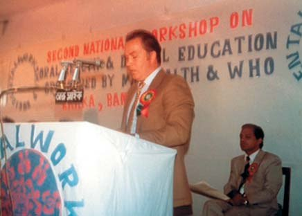
Професор Петро Леус виступає на семінарі ВООЗ з освіти. Дакка, Бангладеш, 1984 р.
– Справді, немає! Поодинокі випадки. Успіх у тому, що на практиці в програмах профілактики у Данії використовуються лише доказові методи. Нікому на думку не спаде застосувати для профілактики карієсу новий винахід у рамках дисертації, як це буває в наших країнах. У Данії дітей щорічно оглядають медичні сестри або зубні гігієністи у класі на стільці за допомогою шпателя. При поганій гігієні чи карієсі (і те, й інше зустрічається вже дуже рідко) дитину направляють до лікаря у стоматологічний центр. Уживаються адекватні заходи (безплатно!!!). Усім іншим: 1) контрольоване в школах чи вдома чищення зубів з використанням паст з активним (!!!) фтором і 2) здоровий режим харчування. Усе! Ще є обмежені програми покриття зубів фторлаком або запечатування силантами. Дорого...
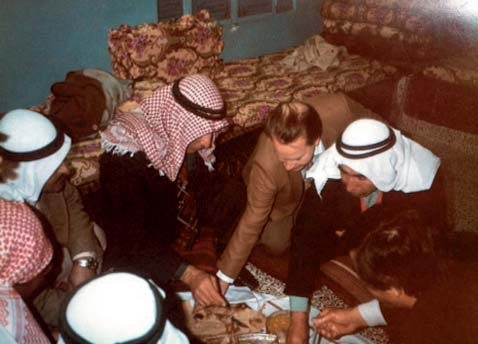
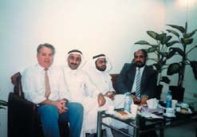
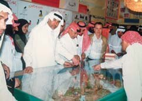
Семінари ВООЗ в Ірані (1983 р.), Арабських Еміратах (1994 р.) і діловий сніданок з головними стоматологами провінцій Саудівської Аравії (1993 р.).
Для України, як і Білорусі, силанти чи лаки, звичайно, дорого, треба просити черговий транш МВФ. Але ж можна організувати чищення зубів першокласникам, як це роблять у багатьох країнах Євросоюзу. Контрольоване чищення зубів першокласникам у школах Росії забороняє санстанція. Напевно, те ж саме – в Україні. Чому вчителі вважають, що є щось важливіше, ніж здоров'я школярів? У Данії – не так! У Білорусі ми також подолали застарілі радянські «нормативи». Багато з Ваших колег бачили це в наших школах. Статті про реальний низький рівень карієсу зубів у дітей шкільного віку публікувалися на сторінках вашого чудового журналу.
У мене є стаття «Стоматологія Білорусі та України: перспективи досягнення європейського рівня», де проаналізовано кроки, потрібні для подальшого вдосконалення системи профілактики та лікування стоматологічних захворювань. «ДентАрт» може її опублікувати.
«Учитися ніколи не пізно...»
– Ви народилися в селі Холодне Плесо Верхньоланнівської сільради Карлівського району на Полтавщині в учительській родині. Але обрали своєю професією стоматологію. Чому?
– Мої батьки, обоє вчителі, любили своїх учнів, напевно, більше, ніж мене і мою сестру (недавно померла в Харкові), змушуючи нас топити грубку в школі, прибирати і т.д. Не було води, «ленінської лампочки», елементарних зручностей. При цьому владці особливих труднощів у побуті не відчували. І ще був один чоловік без особливих труднощів – місцевий фельдшер. Мій строгий батько зробив для мене вибір – будь медиком, корисна професія. Далі я вже сам вибирав стоматологію як одну з найбільш зрозумілих професій, у порівнянні, наприклад, з тим, коли невропатолог стукає молоточком чи терапевт слухає в трубочку. Дуже подобалася хірургія, але, як я вважаю, тут потрібен особливий талант. У свої 80 я переконаний, що коли ти працюєш, будеш справжнім професіоналом у будь-якій спеціальності. Навіть футболістом (правда, мене футбол не приваблював).
– У 1972-1974 роках Ви працювали стоматологом у госпіталі в Ємені. Чому Вас туди послали і на якому рівні там була стоматологія?
– У ті роки стоматології в нашому розумінні в Ємені не було. Були знахарі, гуманітарії, неконтрольовані приватні кабінети. У 1970-х роках СРСР надавав Ємену всіляку допомогу, включаючи медичну у вигляді госпіталю, обладнання, медикаментів та команди лікарів. Я був щасливий, що мене туди послали, бо окрім приємної різниці в зарплаті у Москві і Ємені, я по-справжньому зрозумів, навіщо потрібен людям. Я надавав пацієнтам реальну необхідну допомогу.
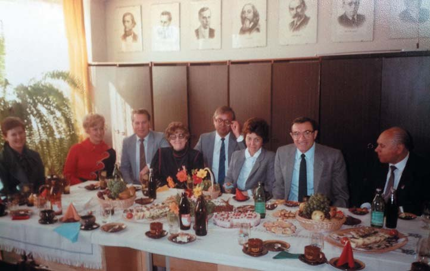
Петро Леус спілкується з колегами під час наради з профілактики стоматологічних захворювань у НДІ стоматології в Одесі. 1978 р.
– По суті, уже півстоліття Ви вірні темі патогенезу, терапії і профілактики карієсу. Чи не вчитель Ваш професор Боровський «прищепив» Вам цей інтерес?
– Провокаційне запитання... У Харкові, а потім у Москві я вчився серйозно, на ленінську стипендію. На останньому курсі на терапевтичній кафедрі (зав. професор Юхим Юхимович Платонов) доцент Євген Власович Боровський якось мене помітив, чи я, можливо, не пам'ятаю, попросився до нього у науковий гурток. Відтак Євген Власович підтримав мене як відмінника в клінічну ординатуру – до нього! Я допомагав Боровському і навчився працювати з тваринами та радіоактивними ізотопами, вивчаючи обмін речовин у зубах. Це стало темою моєї кандидатської дисертації (з нетерпінням чекаю, коли ви в Україні відмовитеся від двоступеневої атестації вчених). Одночасно я читав оригінальну міжнародну стоматологічну літературу, і у мене сформувалася думка про карієс, відмінна від думки Рибакова, Кодоли і багатьох інших, які створювали свої неприступні замки щодо карієсу. У Боровського теорії карієсу не було. Він вивчав біохімію зубних тканин. Важливо, що він допоміг захистити моє «нахабство» і навіть схвалив мою першу «опозиційну» публікацію в 1966 р. Далі були вже мої власні дослідження і пропозиції багатьох оригінальних методів, публікування і використання яких без Боровського, звичайно, було б неможливим. Він із задоволенням погоджувався на першого автора. Вважаю це нормальним в тих умовах протистояння наукових шкіл.
На Ваше провокаційне запитання відповім так: я не знаю, ким був би я як науковець без Боровського, але я також не знаю, був би авторитет Боровського більшим без мого вкладу в його науковий багаж. У цій ситуації, може, простіше і чесніше сказати, що так, він прищепив мені інтерес до наукового пошуку!
– У біографічній статті в Інтернеті читаємо, що Ви 1991 року були на курсах у Японії, 1992-го – в Дублінському університеті. Вік живи, вік учись, вік трудись – Ваш девіз?
– У Вашому питанні вже є правильна відповідь. Звичайно, «вчитися ніколи не пізно» – філософська категорія. Базові знання, наприклад, скільки коренів у зубі 14 або в якому віці закінчується формування коренів зуба 27, потрібні власникові диплома дантиста (по-вашому – стоматолога). Проведіть опитування випускників ваших численних університетів та академій і опублікуйте дані. Порівняйте з ЄС. Тому я їздив вчитися (!) у названі і багато інших країн, і дещо вдалося впровадити в РФ та Білорусі, наприклад, ергономічно правильне положення лікаря і пацієнта (після Японії), курс комунальної стоматології у навчальній програмі стоматологічного факультету БДМУ (після відвідин Дубліна разом з ректором університету). Не буду втомлювати іншими прикладами...
«Успіхи стоматології в Україні відновлюють мої сили для подальшого наукового співробітництва»
– Ви понад двадцять років завідували кафедрою терапевтичної стоматології БДМУ, написали півтисячі наукових робіт, не рахуючи монографій. Як Ви встигаєте, поділіться секретом?.. Що допомагає Вам відновлювати сили для нових досліджень?
– Мої наукові роботи пов'язані не лише з Мінськом. Перша була опублікована 1966 року в ММСІ. Завідувати кафедрами мені довелося не 20, а понад 30 років, починаючи з кафедри профілактики стоматологічних захворювань в ММСІ у Москві. Так що за цей час тільки дуже ледача людина могла створити менше 10 робіт на рік (за 52 роки). При цьому підготувати лише 40 кандидатів і докторів наук. Вочевидь перебільшуєте мої можливості. У багатьох ваших професорів досягнення вищі...
Останніми роками я не веду дослідження, але керую кількома програмами профілактики в Білорусі і методично координую ВООЗівські міждержавні наукові програми, які здійснюють молоді таланти, в тому числі в Україні під керівництвом професорів Л.О. Хоменко, О.В. Деньги, Н.І. Смоляр, Л.Ф. Каськової, М.А. Лучинського. У результаті не лише десятки опублікованих статей в українських і міжнародних виданнях, а й реальні програми вдосконалення стоматологічної допомоги населенню. Успіхи стоматології в Україні відновлюють мої сили для подальшого наукового співробітництва. До речі, зовсім недавно, у травні 2018 року, на ювілейній науково-практичній конференції з профілактики, діагностики та лікування стоматологічних захворювань українські колеги виступили з блискучими доповідями, відзначеними оплесками та квітами.
– Давно були в селі, де народилися? Який найсвітліший спогад дитинства?
– У Верхній Ланні я був 2012 року. Усе змінилося, і не все на краще. Будинку батьків і школи, де я вчився, немає. Пустка. Поїхав у село Ляшівку, де провів більшу частину дитинства у бабусі й дідуся.
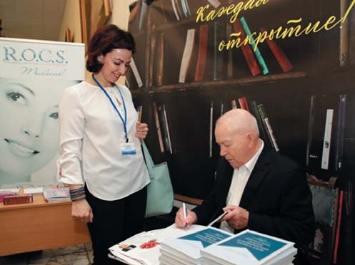
Автограф для стоматолога з Полтави Олени Бережної.
Від хати залишилися тільки стіни і купа сміття, непрохідні кущі до могили мого діда (до неї не добрався). Можливо, десь поруч там нові будинки нових українців та ін., але сльози на очах не дозволяли мені це побачити, тим більше, знайомі з 1950-х років дороги в цих селах навряд чи вписувалися в мої припущення. Я хотів щось зробити, наприклад, відновити будинок, поселити в ньому тих, хто цього потребує. Але я боюся закритих масками лиць. Боюся, що вони не зрозуміють моїх світлих спогадів дитинства: здорові зуби без цукру і зубної пасти, одні чоботи на трьох, паляницю хліба з печі, макуху, молоко з-під корови і, звичайно, перше кохання в третьому класі до учительки.... Між іншим, викладала українською мовою.
– Ми зв'язалися з Верхньоланнівською сільрадою, і голова Олександр Леонідович Рудь повідомив нам, що Ваших батьків і Вашу хату в селі Холодне Плесо добре пам'ятають ті, хто бігав до Вас гратися дітьми. Подумалося: якщо діти бігали гратися в хату вчителів, то це були справжні педагоги... Також він повідомив, що з трьох сіл Верхньоланнівської сільради у роки Другої світової війни найбільше постраждало Ваше Холодне Плесо. А другий удар йому завдали при укрупненні колгоспів, коли невеликі села масово заносили в розряд неперспективних, ліквідовували там школи, клуби, магазини... У Ваших рідних краях теж з трьох колгоспів зробили один, і мешканці Холодного Плеса стали перебиратися у Верхню Ланну та інші місця. Шкода, звичайно, але життя триває, і думаю, що Ваші земляки з Верхньої Ланни внесуть Ваше ім'я в письмову історію свого села як видатного вченого і практика, організатора охорони здоров'я...
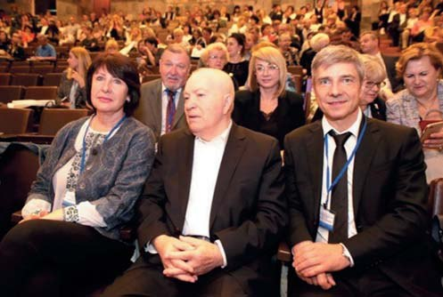
Ректор БДМУ Анатолій Вікторович Сікорський (праворуч) вручає Петрові Андрійовичу Леусу диплом Почесного професора Білоруського державного медичного університету. 18 травня 2018 р.
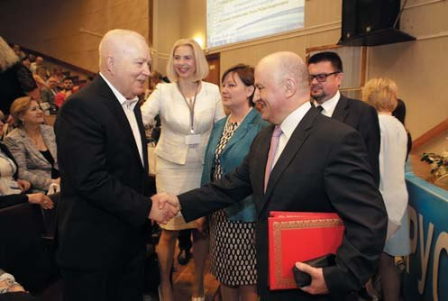
Людмила Каськова (Полтава), Петро Леус (Мінськ), Олександр Мітронін (Москва) на Республіканській науково-практичній конференції з міжнародною участю «Актуальні питання профілактики, діагностики та лікування стоматологічних захворювань», присвяченій 20-річчю заснування 2-ї кафедри терапевтичної стоматології БДМУ і 80-річчю професора Петра Леуса. Мінськ, Республіка Білорусь. 18 травня 2018 року.
– А тепер – Ваше побажання колегам – читачам журналу «ДентАрт»...
– Передплачуйте і читайте найкращий в Європі журнал! Я не жартую. Спробуйте отримати якусь користь із «Caries Research», «Journal of Dental Research», і Ви зрозумієте, що я мав рацію. Коли щось не так, пишіть leous.peter@gmail.com
Розмовляла Ганна Антипович. Фото з архіву Петра Леуса і сайту БДМУ.